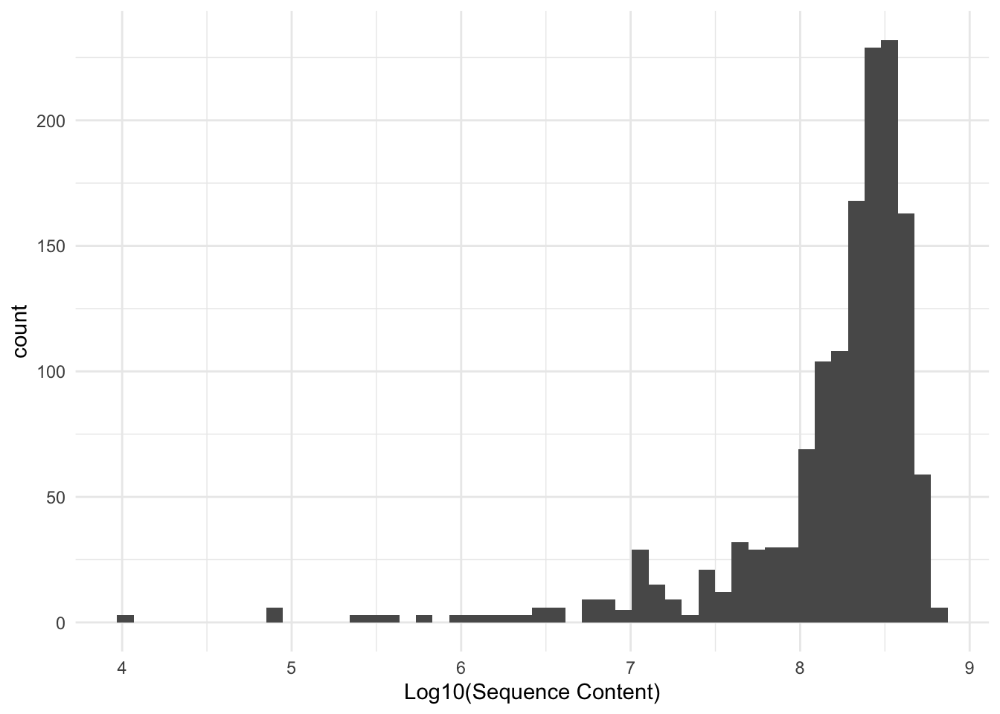
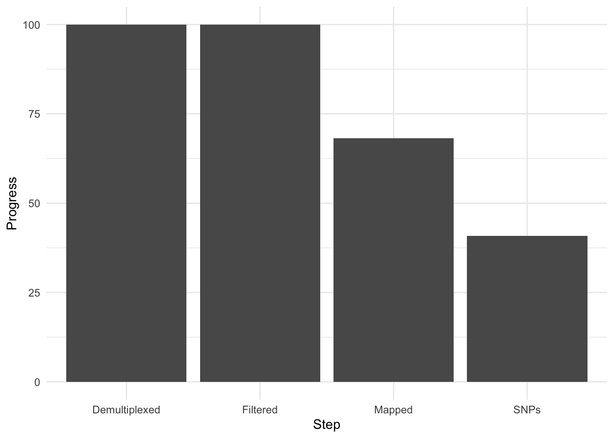
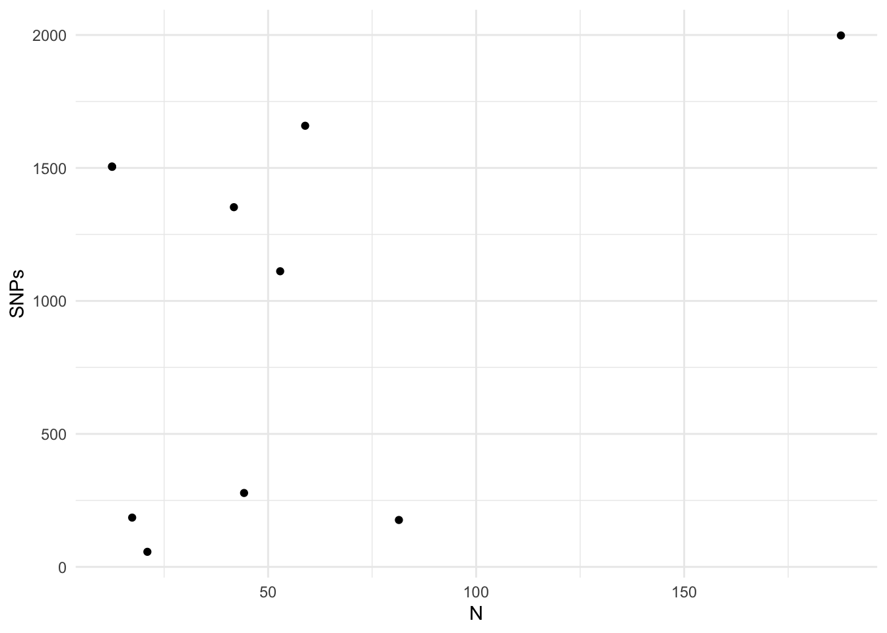

Summary
We retrieved usable sequence data from at total of 1419 individuals. The number of sequence reads is depicted by file size (log base 10) below.

The largest number of sequences was retrieved from a sample from Camp Edwards, MA, with 50,205,568 sequences. The median read size was 17,332,284.
Processing

Progress
The following logs document the initial attempts at implementing the dDocent workflow for processing NovoSEQ data on the spotted turtle.
- Demultiplexing is the process of taking all the data that is mixed together and turning it inot a a bunch of files, one for each individual, based upon the individual barcodes.
- The first run of dDocent crashed almost immediately.
- The second run of dDocent also crashed, but this time it was for a different reason. Apparently, the node it was running on was failing. However, it still crashed.
- As a result of these attempts, it appears that the data are just too big and I need to take subsets of the data to work with so the computers can actually get something done. So, after talking with a colleague about it, I right-sized the data first in random samples and then ran a third run used a random subset of 10% of each individuals reads to make a synthetic “individual”. It ultimately failed at the end as well.
- So, lessons learned. I needed to create a random subset of my data and use that for just the assembly portion of this process. So I set out to do that and found results.
- A 2.5% subset finished with 7k contigs.
- A 5% subset finished with 58k contigs.
- A 10% subset finished with 400k contigs.
- So, I can now start mapping. At first, I took the reference genome from the 2.5% subset and took the raw data again (all the reads for each indiviudal) and used
bwato assemble andFreeBayesto call SNPs. Unfortunately, since the number of reads for each individual is somewhere in the range of 3 - 33 million reads, it takes a bit of time. Right now, it is averaging 11 hours per individual * 1419 individuals which is 650.375 days (meaning it will be done on 2024-11-13). This run is still going and unless it dies at some point, I am going to allow it to keep running… - Again, to take a random subset seems to be the way to go. In what follows is my current approach to this, which started on 2 February 2022.
Workflow Progress
So I started up a individuals processes to map and call SNPs. It is done using slurm on our clusters so I fire up an instance on one of the compute nodes as:
srun --nodes=1 --mem=16G --export=ALL -J mapX --pty /bin/bashAs a first mapping run, I had a single process (that one used 64G of memory and was way too much for what bwa and FreeBayes seem to need). The data being used in this run include:
- A new random selection of 5% of each individuals genome.
- The assembly created from the 2.5% random selection of each individual.
This was started on 2 February 2023 and appears to be taking roughly 30 minutes per indivudal to allow bwa to map. Below is the progress to date.
| Population | N | Demultiplexed | Filtered | Mapped | Sites | SNPs |
|---|---|---|---|---|---|---|
| S | 187 | 100 | 100 | 100 | 15089 | 1994 |
| P | 59 | 100 | 100 | 100 | 10730 | 1660 |
| J | 13 | 100 | 100 | 100 | 9367 | 1508 |
| K | 13 | 100 | 100 | 100 | 9367 | 1508 |
| R | 42 | 100 | 100 | 100 | 10294 | 1348 |
| W | 53 | 100 | 100 | 100 | 10891 | 1113 |
| O | 44 | 100 | 100 | 100 | 11338 | 282 |
| Q | 18 | 100 | 100 | 100 | 7100 | 188 |
| T | 81 | 100 | 100 | 100 | 11986 | 176 |
| V | 21 | 100 | 100 | 100 | 8586 | 58 |
| A | 92 | 100 | 100 | 100 | ||
| B | 102 | 100 | 100 | 100 | ||
| C | 139 | 100 | 100 | 100 | ||
| D | 84 | 100 | 100 | 100 | ||
| E | 36 | 100 | 100 | 100 | ||
| F | 31 | 100 | 100 | 100 | ||
| G | 78 | 100 | 100 | 88 | ||
| H | 66 | 100 | 100 | 21 | ||
| I | 33 | 100 | 100 | 0 | ||
| L | 95 | 100 | 100 | 11 | ||
| M | 129 | 100 | 100 | 88 | ||
| N | 53 | 100 | 100 | 91 |
Current progress on bioinformatic workflows.
Overall, there is a relationship between the number of individuals used to call SNPs and the number found. Those population groups with small \(N\) are going to be collapsed into larger groups and rerun to call SNPs. I think when it is all said and done, I’ll run a little test to see what the asymptote is for this relationship and then partition the remaining mapped data into groups when calling SNPs.

OK, so we wait until the rest of the samples are analyzed.